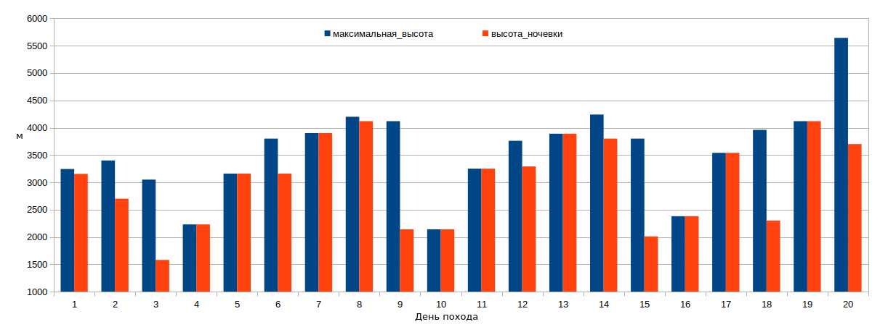

| Вид туризма: | горный |
| Район: | Центральный Кавказ |
| Категория сложности: | Третья |
| Количество участников: | 8 |
| Сроки проведения: | 1-21 августа |
| Продолжительность: | 21 день |
| Протяженность: | 127 км |
| Набор высоты: | 12900 км |
| Нитка маршрута: | Пос. В. Балкария — пер. Пастуший (1А, 3244 м) – пер. Яков (1А, 3400 м) — Перевал Дополнительный (1А, 3050 м) - р.Черек — пер. Туристов Грузии (2A, 3800 м) — пер. Ашинова (2A, 3800 м) — пер. Спартак (2А, 4000 м) — пер. МВТУ (2А, 4200 м) — а/л Безенги — пер. Столбовой (2А, 3714 м) — пер. Тютюргу Восточный Верхний (1Б, 3890 м) — пер. Шаурту В. (2А, 4000 м) — пер. Грановского(2А, 3950 м) — пос. Эльбрус — в. Эльбрус (2А, 5621 м, рад) |
| Пройдено перевалов и вершин: | 12 |
| из них | 1A - 3 1Б - 1 2А - 8 |
| Максимальная высота: | 5642 м (г. Эльбрус) |
| Максимальная высота ночевки: | 4120 м |
|
Примечаниe: Протяженность маршрута в 127 км посчитана по GPS треку без учета участков, пройденных дважды. |
|
| N | Фамилия, имя, отчество | г.р. | Опыт | Должность |
|---|---|---|---|---|
| 1 | Шабалин Дмитрий Григорьевич | 1981 | 3ГР, Центральная Азия, 6ГУ Памир, 7495 м |
руководитель |
| 2 | Александрова Анастасия Сергеевна | 1994 | 3ГУ 5120 м |
Финансист |
| 3 | Барковская Екатерина Сергеевна | 2001 | 2ГУ 3360 м |
Медик |
| 4 | Григорьев Петр Владимирович | 1980 | 2ГУ 4345 м |
Штурман, Реммастер |
| 5 | Зайонц Александр Альбертович | 1983 | 2ГУ 5642 м |
Снаряженец |
| 6 | Милосердова Наталья Васильевна | 1993 | 2ГУ 4345 м |
Завхоз |
| 7 | Сартан Елизавета Александровна | 1991 | 4ГУ,2ГР 5642 м |
Помощник руководителя, фотограф |
| 8 | Скачков Владислав Сергеевич | 1994 | 2ГУ 4210 м |
Хронометрист, эколог |
Запланированная нитка:
Пос. В. Балкария — пер. Пастуший (1А, 3244 м) – пер. Яков (1А, 3400 м) — Перевал Дополнительный (1А, 3050 м) - р.Черек — пер. Туристов Грузии (2A, 3800 м) — пер. Ашинова (2A, 3800 м) — пер. Спартак (2А, 4000 м) — пер. МВТУ (2А, 4200 м) — в. Башхаауз (2А альп, 4470 м. рад) — а/л Безенги — пер. Столбовой (2А, 3714 м) — пер. Тютюргу В. (1Б, 3800 м) — пер. Шаурту В. (2А, 4000 м) — п. МВТУ (2А альп, 4300 м. рад) — пер. Грановского(2А, 3950 м) — пер. Гумачи (2А, 3540 м) — в. Гумачи (3750 м) — пос. Эльбрус — в. Эльбрус (2А, 5621 м, рад)
Фактически пройденная нитка:
Пос. В. Балкария — пер. Пастуший (1А, 3244 м) – пер. Яков (1А, 3400 м) — Перевал Дополнительный (1А, 3050 м) - р.Черек — пер. Туристов Грузии (2A, 3800 м) — пер. Ашинова (2A, 3800 м) — пер. Спартак (2А, 4000 м) — пер. МВТУ (2А, 4200 м) — а/л Безенги — пер. Столбовой (2А, 3714 м) — пер. Тютюргу Восточный Верхний (1Б, 3890 м) — пер. Шаурту В. (2А, 4000 м) — пер. Грановского(2А, 3950 м) — пос. Эльбрус — в. Эльбрус (2А, 5621 м, рад)
Изменения в маршруте:Высотный график маршрута:

Центральный Кавказ – горный район, являющийся участком Главного Кавказского хребта (ГКХ) и перпендикулярных отрогов. Границами Ц.К. принято считать Эльбрус – на западе, и Казбек – на востоке. Поскольку Кавказ относится к молодым складчатым горам и является сейсмоактивным районом, многие вершины имеют пикообразную форму, часто встречаются скальные стены, а ледники сменяются ледопадами. Высшая точка – г. Эльбрус (5642 м.), а 5000-метровый барьер преодолевают Коштантау (5124-5152 м.), Казбек (5033 м.), трехвершинная гряда Джангитау (Главная – 5085, Западная – 5059, Восточная – 5034), две вершины Шхары – Главная (5193) и Западная (5069 м.)
Поход проходил севернее Главного Кавказского хребта, по долинам р. Черек Балкарский – р. Тютюнсу – ледник Башхаауз – лед. Безенги – верховья р. Булунгусу (траверс) – р. Гара-Аузусу – р.Башиль-Аузус – р. Адырсу. Таким образом, стартовала группа в горном районе Балкария, затем – Безенги, а заканчивался маршрут – в районе Уллу-Тау.
Долины рек в основном достаточно широкие, а склоны рек – относительно пологие, хотя часты моренные карманы (верховья Тютюнсу, Черека Безенгийского, Гара-Аузусу). Воду из рек и ручьёв использовали для приготовления пищи и питья без последствий. Ручьи или, выше, снежники - многочисленны, проблем с питьевой водой нет. Снеговая линия проходит на высоте около 3500 м, ледники стекают примерно до 3000 м. При этом на ледниках часто встречаются ледопады, некоторые имеют крутые края языков, оканчиваются над бараньими лбами. Они обходятся по бортам долин, как правило, там есть хорошие тропы. Исключение составляет лишь ледник Башхаауз, на котором группе не удалось найти адекватные пути прохождения препятствия.
Погода в данном районе переменчивая, но более или менее устойчивая. Даже в течение одного дня солнечные периоды могут неоднократно сменяться ливневым дождём, снегом или градом и наоборот. Как характеризует туристское коммьюнити – «погода меняется часто, но ненадолго». В высокогорье часто лежат облака, видимость может падать до 10-15 метров. Как правило, в июле-августе утром стоит ясная погода, во второй половине дня набегают тучи и возможны осадки, к вечеру погода может улучшиться. В любом случае, планируя поход в данном районе, следует либо заложить много запасного времени на отсидки, либо готовиться, что придётся ходить в непогоду.
Крутой рельеф и переменчивая погода способствуют камнеопасности. К тому же, в последние годы наблюдается «вытаивание» Кавказа: ледники становятся менее мощными, все больше перевалов превращаются в скальные или осыпные. Неприятным сюрпризом стал изменившийся лед. Башхаауз, упомянутый выше.
Центральный Кавказ был выбран по причине транспортной доступности, достаточно оперативной эвакуации в случае ЧП, обилию альтернативных вариантов прохождения препятствий, а также административными ограничениями ввиду бушующей пандемии COVID-19 и невозможностью проводить поход в раннее запланированных горных странах.
Кавказ отличается хорошей транспортной доступностью и возможностью делать частые заброски. Всего у нас было 4 заброски. Первую заброску мы взяли на третий день похода у моста через Черек-Балкарский, договорившись о подвозе в указанное время, держа связь через спутниковый телефон. В ней, помимо продуктов, были веревки и техническое снаряжение. Вторую заброску завезли в альплагерь Безенги, третью - на турбазу Чегем. Четвертую заброску взяли в поселке Эльбрус, там были теплые вещи для восхождения на Эльбрус, а также телефоны, зарядки, городская одежда.
Все заброски организовывали через Бориса Саракуева, bezonec@list.ru. По приезду в Минводы, мы передали с водителем сумки, с указанием, куда и к какому сроку их нужно забросить. Доставка каждой заброски нам обошлась в 3500 р, также пришлось платить за хранение в лагерях. Мы просили Бориса завозить заброски не сразу, а ближе к назначенному сроку, чтобы сэкономить на хранении в альплагерях. В принципе, Борис учел наши пожелания, и больших сумм за хранение у нас не получилось, хотя пара связанных с ранней доставкой неприятных моментов у нас было, например, на турбазе Чегем.
Также Борис организовал нам покупку очищенного бензина для горелок, который мы раскидали по заброскам сразу после приезда в МинВодах. Газель до Верхней Балкарии из Минвод обошлась в 8500 р.
| Время выхода | 10:10 |
| Время окончания движения | 16:45 |
| Расстояние | 6.8 км |
| Набор высоты | +870/-100 м |
| Время в движении | 3 ч 36 мин |
| Максимальная высота | 3244 м |
| Высота ночевки | 3154 м |
В 4 утра основная часть группы выгрузились из поезда в Минеральных водах. Тут нас уже ждали Петя и Влад. Петя прилетел вечером предыдущего дня на самолете, а Влад неделю назад закончил поход первой категории и отдыхал на Черном море.
Выехали в 5 утра, примерно к 8 утра доехали до пос. В. Балкария. Дальше возникло недопонимание. Водитель хотел нас везти вверх по основной дороге до урочища Уштулу, а нам надо было заезжать вверх по р. Чайнашки до верхнего коша. По отчетам газель туда может пройти. Однако, то ли газель из отчетов обладала несвойственной для автомобилей марки этого класса мощностью, то ли это была не газель вовсе, но наша газель с трудом проехала через поселок и встала на первом же подъеме. Пришлось выгружаться и искать более проходимый транспорт.
К счастью, как раз в это время вверх по дороге проезжал местный житель на Ниве. Он вызвонил своего друга на другой Ниве, и за 3000 рублей они завезли нас до начала маршрута. Каждая Нива везла по 4 пассажира с рюкзаками, было очень тесно, но тянули машинки бодро. Телефон водителя я напишу, как только вспомню, куда положил маршрутку.
Мне показалось, что водитель относительно произвольно выбрал конечную точку (43.13156, 43.34991), и Нива могла пройти дальше. Но время у нас было, и мы не спеша пошли по дороге вдоль левого берега ручья Чайнашки. Через 2 километра проходим кош () Вскоре нам надо было пересекать ручей и подниматься на гребень, причем воды по пути подъема не предвиделось. Тем временем было уже 11 часов, есть не хотелось, но было ясно, что обедать лучше до подъема. Мы приметили источник воды достаточно высоко на склоне и решили проложить путь через него. Вместо дороги нам пришлось подниматься по траве, но склон был некрутой и идти по нему было приятно.
Пообедав, по коровьим тропам вернулись на дорогу и продолжили путь вверх. Дорога серпантином вывела нас на седловину в гребне (43.11072 43.34031, ) и дальше косым траверсом повела в соседнюю долину (). Скоро мы дошли до развилки (43.10319 43.34175) и, не сумев разглядеть дальнейший путь в набежавшем тумане, свернули налево. Это оказалось не самым лучшим решением: через 600 метров мы пришли в тупик. Пришлось по морене возвращаться на основную дорогу, и, хотя нам удалось это сделать без потери высоты, путь по крупным камням занял почти 20 мин. Зато вспомнили, как по ним ходить.
Вернувшись на дорогу, опять пошли в сторону перевала. Погода начала портится, пошел дождь. Когда вышли на перевал, многие члены группы изрядно промокли. C перевала открывается вид на оз. Гийбашкель. Дорога огибает озеро слева, но мы, заприметив неплохое место для стоянки с противоположной от дороги стороны озера, решили пойти прямо туда по травяным и каменистым склонам.
| От точки высадки из машины до перевала Пастуший | 3 ч 15 мин |
| От перевала Пастуший до оз. Гийбашкель | 20 мин |
| Время выхода | 05:57 |
| Время окончания движения | 09:30 |
| Расстояние | 4.3 км |
| Набор высоты | +290/-745 м |
| Время в движении | 2 ч 32 мин |
| Максимальная высота | 3400 м |
| Высота ночевки | 2700 м |
Тропа поднимается серпантином по осыпному склону и выходит на перевал. На перевале - холодно и ветрено, моросит мелкий дождь, поэтому мы без лишних промедлений начинаем спуск вниз по мелкой осыпи средней крутизны. Скоро склон становится положе, долина расширяется, но выбрать оптимальный путь движения оказывается довольно сложной задачей из-за тумана. Пытаемся ориентироваться по навигатору, это не очень хорошо получается, и в результате мы оказываемся слишком высоко на боковом склоне, поросшим травой.
Сверху кажется, что сбрасывая высоту наискосок, можно скоро спуститься на дно долины, где, возможно, идет тропа. Но долина тоже уходит вниз, и мы, по факту, продолжаем идти неоптимальным путем параллельно долине, на высоте пару сотен метров над ней. Впрочем, травяные склоны, на которых мы оказались, были умеренной крутизны, а высоту все равно надо сбрасывать, так что мы не много потеряли.
В конце концов, нам приходится повернуть вниз и мы выходим на тропу в районе оврага, прорезающего долину с запада на восток (43.07562, 43.32755).
Тропа скоро доходит до выраженного гребня, пересекающего долину с запада на восток, немного спускается вниз вдоль гребня, затем продолжает пересекать долину и доходит до остатков коша. Проходим еще немного дальше по долине и встаем лагерем под бараньими лбами перед началом подъема на перевал Дополнительный.
На часах всего 9 утра, но пройти перевал Дополнительный в этот день не представляется возможным: нас ожидают полтора километра сброса по камням и траве. Погода, тем временем, портится окончательно. Устраиваем дневку.
Расчет ходового времени| От оз. Гийбашкель до пер. Яков | 45 мин |
| От перевала Яков до руч. Коштансу (43.06353, 43.31081) | 1 ч 15 мин |
| Время выхода | 06:25 |
| Время окончания движения | 17:15 |
| Расстояние | 4.8 км |
| Набор высоты | +610/-1730 м |
| Время в движении | 7 ч |
| Максимальная высота | 3050 м |
| Высота ночевки | 1580 м |
Утром дождь прекратился, но остался достаточно густой туман, в котором мы находим дорогу на перевал Дополнительный. Подъем проходит по крупной осыпи и сложности не представляет, главное - не промахнуться и не потеряться в тумане. Седловина перевала широкая, травянистая, на ней, возможно, даже можно было бы поставить палатки, но нет воды.
Верхня часть спуска представляет собой длинный осыпной кулуар средней противности. Камнеопасность сначала невысокая, но ниже в него впадают боковые кулуары, образуя воронку, и вероятность падения сверху случайного камня возрастает. Стараемся держаться ближе к левому борту, движения по центру избегаем. Всего спуск занимает около часа, отдыхать особо негде.
В нижней части кулара находится снежник, ниже которого есть безопасное место для привала, и, возможно, даже для установки лагеря, правда поблизости нет воды. Ниже кулуар становится более широким, с крупной осыпью, а затем - травяным. Спускаемся, выбирая для движения то один борт, то другой. Облака остаются выше. Периодически попадается что-то вроде тропы. В одном месте путь преграждают бараньи лбы, спуск с элементами лазанья. Обед устраиваем на осыпном гребешке рядом с ручьем на относительно пологом участке. После обеда продолжаем спуск.
Когда до реки оставалось сбросить около 50-ти метров замечаем уходящую (вправо) в лес тропу и сворачиваем на нее. Тропа идет по полке выше конгломератных сбросов и через 500 м упирается в промоину (43.03767, 43.33051). Попытка найти тропу на противоположной стороне промоины не увенчалась успехом, поэтому приняли решение спускаться вниз к реке по промоине.
В самом низу спуска неведомо откуда взявшийся камень с хрустом прокатился по кустарнику, подпрыгнул и пролетел в метре над нашими головами. камень.
Спустившись вниз идем сначала по старому руслу реки, затем выходим к реке Черек, идем некоторое время вдоль нее и затем поднимается на поросший лесом возвышенный участок на слиянии ущелий. Пересекаем участок, пока не упираемся в р. Тютюнсу. Делаем разведку вверх вверх и вниз. Вверху ничего привлекательного не находим, а внизу, возле самого впадения в р. Черек, есть ровные места для стоянок, а сама река разливается на множество рукавов, пересечь которые не представляет сложности даже во второй половине дня.
| Время выхода | 06:10 |
| Время окончания движения | 16:35 |
| Расстояние | 8,3 км (из них 2х2.8 км - выход за заброской) |
| Набор высоты | +1020/-370 м (+660/-10 м без учета выхода за заброской) |
| Время в движении | 5 ч 40 мин |
| Максимальная высота | 2230 м |
| Высота ночевки | 2230 м |
Переходим р. Тютюнсу по разливам. Максимальная высота – по колено, в остальных местах - ниже середины голени или по щиколотку (зависит от роста, конечно). Бродим по одному, стеночки не нужны. Погода ясная. После брода идем дальше по правому берегу р.Черек по тропе. Доходим до места (поляна), где нужно поворачивать к перевалу Туристов Грузии.
| Лагерь в долине Коштансу - перевал Дополнительный | 1 ч |
| Спуск с перевала до р. Черек | 4 ч 40 мин |
| От места спуска к р. Черек, до поляны на правом берегу Тютюнсу | 1 ч 15 мин |
| От поляны на правом берегу Тютюнсу до моста через Черек | 2 ч |
На поляне (43.02894, 43.32283) бросаем вещи и делимся на три группы: 2 человека с рацией (Лиза и наш навигатор Петя) идут разведывать тропу наверх, потому что по данным предыдущих отчетов ее легко потерять, а идти по лесу без тропы наверх с полными рюкзаками весьма проблематично; один человек (Настя) остается на поляне с вещами и поддерживает связь по рации с обеими группами; все остальные вместе с руководителем освобождают рюкзаки и идут за заброской (еда и техническое снаряжение на второе кольцо).
За заброской продолжаем двигаться по хорошей тропе вдоль Черека. Сначала проходим большое ровное травянистое поле, затем тропа уходит от реки, обходя прижимы. Через 50 мин выходим на верхнюю точку, с которой хорошо видны верховья р. Черек. Недалеко находится кош, спуск к мосту находится немного не доходя до него. Мы договорились с Борисом Саракуевым, что заброску нам подвезут к 9 часам. По факту машина опоздала на час.
Вернувшись в лагерь, делим заброску, обедаем (холодный обед, чтобы скорее выйти на маршрут), выходим. Сначала движемся без тропы по хвойному лесу, доходим до камня с памятной табличкой. Выше тропа появляется. Попадается черника, земляника, малина. Солнечно, хорошо, лес прикрывает нас от жары. По пути подъема до выхода из леса воды нет. Река Тютюнсу идет по каньону, подходов к ней нет, но порой через заросли можно разглядеть красивые водопады в каньоне. Набирать воду рекомендуем внизу, до подъема.
| Время выхода | 06:00 |
| Время окончания движения | 14:15 |
| Расстояние | 4.5 км |
| Набор высоты | +930 |
| Время в движении | 4 ч 35 мин |
| Максимальная высота | 3160 м |
| Высота ночевки | 3160 м |
Вверх вдоль реки, проходим поляну, где тоже есть места для стоянки и вода. Идем дальше по тропе через невысокий лес. Через две ходки тропа теряется, лес становится трудно проходимым. Поворачиваем направо и через 100 м выходим через кусты к ручью, еще 400 м пробираемся вверх вдоль русла до выхода в моренный карман (43.02685, 43.28053). Приходится то переходить с берега на берег, то лезть по кустам. Этот участок длиной 500 м мы проходили около 40 мин. Возможно, проще было бы не выходить к ручью, а идти по лесу в одном направлении, так путь по заросшему кустарником участку был бы короче.
Далее весь путь проходит по карману, главное из него не сворачивать. Со временем ручей становится все менее бурным и прячется под камнями, потом снова появляется. Кусты заканчиваются. Выше карман становится круче, но идти по нему не сложно почти до самого конца. Выше истока кармана находится обширная полка, а в 200 м к югу от него - прекрасные стоянки, на которых мы разбиваем лагерь. Жаль лишь, что великолепный вид с нашей полки заслоняют набежавшие облака.
| Время выхода | 05:38 |
| Время окончания движения | 16:15 |
| Расстояние | 5.3 км |
| Набор высоты | +820/-820 м |
| Время в движении | 5 ч 35 мин |
| Максимальная высота | 3800 м |
| Высота ночевки | 3160 м |
Утром облака исчезают, погода отличная. Впереди путь преграждает пояс бараньих лбов, проход есть по полке с левого борта долины. Потенциально, случайный камень может упасть со скал справа, поэтому к ним не приближаемся. Впрочем, места для маневра на полке достаточно. Выше сбросов поворачиваем налево к центру долины, пересекаем несколько участков гладких, но не крутых бараньих лбов и выходим на снег, по которому без труда выходим на перевал. Весь подъем особой сложности не представляет, идти по снегу лучше в кошках. На перевале снимаем записку группы А.Новоселова 5 к.с. Они пошли на перевал выше, нам же предстоит по леднику спускаться вниз.
С противоположной стороны перевала находится ледник, сейчас он полностью открыт. От седловины перевала идем к западу, на центр ледника, и спускаемся вниз. Финальная часть спуска - великолепная ледовая "эстакада" (). Спустившись с нее, снимаем кошки и идем вниз вдоль ручья до того, как откроется путь на право, к перевалу Ашинова.
Выводы
В наших условия сложность прохождения перевала не превышала 1Б. От группы требовалось лишь минимальное умение ходить в кошках. В июле ледник на юго-западной стороне перевала может оказаться закрытым, что потребует связок. И все же я плохо представляю, в каких условиях реальная сложность этого перевала может соответствовать категории сложности 2А.
Расчет ходового времени| От поляны возле р. Тютюнсу до моста через р. Черек | 1 ч (в одном направлении) |
| Поляны возле р. Тютюнсу - перевал Туристов Грузии | 9 ч 20 мин |
| Перевал Туристов Грузии - поворот поворота к перевалу Ашинова | 40 мин |
Как только открывается путь направо, к перевалу Ашинова, постепенно заворачиваем туда и начинаем траверсировать осыпные поля так, чтобы с одной стороны не сильно сбрасывать высоту, но и не вылезать на крутые склоны. Пройдя цирк, снова начинаем набирать высоту. Впереди показывается седловина перевала со снежной шапкой. Кажется, что она огромная и находится очень далеко, но это лишь обман зрения.
Выход на перевал - около 100 м набора по очень мелкой осыпи, по которой идет тропа, оставшаяся от предыдущих групп. Седловина перевала широкая, осыпная.
Спуск начинаем по следам сначала прямо вниз, затем уходим направо. Первые метров триста высоты сбрасываем по мелкой осыпи, очень быстро. Далее склон становится более пологим, с участками травы. Пройдя довольно большое расстояние вниз наискосок, подходим к конгломератному сбросу на зачехленную часть ледника Хрумкол. Находим приемлемый кулуар и спускаемся по нему плотной группой. На фоне усталости спуск длиной 130 м проходит довольно медленно и занимает около 20 мин. После анализа космоснимков потом было ясно, что спускаться в этом месте было не обязательно, можно было пройти метров 300 вверх, где конгломератный склон сходит на нет. Лагерь ставим, найдя относительно ровное место ближе к центру ледника. Места под палатки приходится разравнивать. Вода есть в виде слабых ручейков, стекающих по открытым участкам льда. Очевидно, что хорошие места для ночевки есть ниже ледника на траве, но сбрасывать туда, а на следующий день подниматься обратно нет никакого резона.
Выводы
В наших условия сложность прохождения перевала составляет 1А, никаких технических сложностей, кроме осыпи, нам не встретилось.
Расчет ходового времени| Поворот из под перевала Туристов Грузии - перевал Ашинова | 1 ч 20 мин |
| Перевал Ашинова - покровная морена ледника Хрумкол | 2 ч |
| Время выхода | 06:50 |
| Время окончания движения | 20:00 |
| Расстояние | 4.4 км |
| Набор высоты | +740 м |
| Время в движении | 15 ч 10 мин |
| Максимальная высота | 3900 м |
| Высота ночевки | 3900 м |
C покровной морены, на которой был расположен лагерь, перебираемся на ледник и идем по нему. Ледник открытый, ровный, идти по нему - одно удовольствие. Ясно, светит солнце. К 10 часам подходим под взлет ледника с ледопадом. По описанию позапрошлого года, группа прошла этот ледопад за пару часов в связках, правда, это было в июле месяце.
Начинаем подъем к центру ледопада по льду крутизной 10 - 15 град. Скоро крутизна увеличивается, трещин становится больше, принимаем решение идти в связках. Периодически приходится форсировать участки с крутыми стенками на личной технике. Перешагивание трещин психологически вызывает затруднение у некоторых участников.
К 12:00 доходим до стенки длиной около 30 м и крутизной 40 - 50 град., через которую провешиваем первую веревку. Этой же веревки хватает, чтобы преодолеть один или два снежных моста сразу выше стенки.
Затем вешаем через ряд снежных мостов вторую веревку. Склон пологий, но очень рваный. Проходится участок с трудом. После прохождения этого участка группа оказывается в зоне сераков в верхней части ледопада.
Пробуем повесить третью веревку в направлении центра ледопада, однако через полверевки путь преграждает довольно внушительный разлом. Решаем не штурмовать его, а вернуться и повесить веревку к левому борту (по ходу движения). Сначала путь кажется не очень сложным, всего-то пара трещин средней крутизны. Но, на самом деле, трещины довольного глубокие и часто расширяются к низу, так что путь длиной в 30 м оказывается той еще акробатикой. Лидеру пришлось спустится на пару метров в трещину, закрепится на противоположной стороне и вылезать, организовывая промежуточные точки на ледобурах. Следующие участники шли более прямым путем, по перилам, но здесь тоже приходилось преодолевать пару метров вертикальной стены, на которой пришлось организовать вытягивание рюкзаков. После прохождения всех участников, веревку сдернули, сделав ледовую проушину. На прохождение этого участка у нас ушло полтора часа. Параллельно достали обед и перекусили всухомятку, ведь было уже 3 часа дня.
Между тем, место, через которое эта веревка проходила, после длительного рассмотрения, выглядело не так уж безопасно. Хотя свежих ледовых обвалов поблизости не было, сераки в этой зоне были высокими, с расширяющимися вниз трещинами, и было ясно, что рано или поздно эта конструкция обвалится, а день был жаркий. По итогу я считаю, что уходить под правый (орографически) борт после второй веревки было не самым лучшим решением. Лучше было бы продолжать провешивать по центру ледопада. Преодоление разлома заняло бы примерно такое же время, зато не пришлось бы опасаться обвала.
Четвертую веревку вешаем вдоль правого (орографически) борта ледника, а пятую - с правого борта к центру. Передвижение здесь уже не представляет большой сложности, веревки нужны скорее для страховки на снежных мостах.
Далее связываемся и в течение следующих трех часов идем закрытому леднику, распутывая трещины. Кое-где приходится делать дополнительную страховку через ледобур. Встречается одна достаточно крутая стенка высотой пару метров, на которой пришлось организовать перила из куска связочной веревки. Ледник закрытый, попадаются отдельные вытаявшие участки с открытым льдом. Адекватных мест для ночевки нет.
К наступлению темноты мы оказались на снежной полке шириной 5-7 м, где можно безопасно организовать стоянку. Полка имела уклон около 10 град, и места под палатки пришлось выкапывать в снегу. Место лагеря предварительно тщательно прощупали палкой на предмет трещин. Чуть более широкое и более пологе место было чуть дальше, по центру ледника, но путь туда вел через снежный мост, и мы решили не рисковать. Было опасение, что по темноте, на фоне усталости, можно упустить вещи вниз по склону, но все обошлось.
Была у нас и еще одна проблема. Несколько часов назад, как только солнце скрылось за хребтом, резко похолодало, и одна участница не смогла проконтролировать свое состояние и переохладилась. На нее надели теплую куртку, но состояние все равно оставляло желать лучшего. Сразу после прибытия на место лагеря, для нее сделали площадку в снегу, постелили туда коврики, укутали в спальник. Позже переместили в палатку, напоили горячим чаем.
8 августа| Время выхода | 08:20 |
| Время окончания движения | 18:00 |
| Расстояние | 1.9 км |
| Набор высоты | +260/-40 м |
| Время в движении | 9 ч 5 мин |
| Максимальная высота | 4200 м |
| Высота ночевки | 4120 м |
Чтобы выспаться и восстановиться после вчерашних событий, было решено сделать подъем более поздним – дежурные встали в 6, а остальная группа - в 6:30. Участница согрелась и чувствует себя гораздо лучше. Выходим в 8:20. Погода радует солнцем, но у этого есть и обратная сторона – начал таять снег и снежный мост, по которому планировалось перейти трещину, мог нас не выдержать. Но все обошлось, вся группа благополучно перешла на другую сторону.
Продолжаем движение в связках по центру закрытого ледника. Большие разрывы закончились, но периодически все же находятся трещины, прикрытые снегом, в которые можно провалиться. Через час выходим не перевал.
Седловина перевала узкая, каменистая, мест под палатки нет, но можно встать на закрытом леднике рядом. Вниз, на ледник Башхауз, уходит осыпной склон. К северу находится вершина Башхауз, на которую у нас запланировано восхождение, но из-за отставания от графика мы не можем его совершить. Вместо этого расформировываем связки, быстро кипятим кастрюлю чая, съедаем обед и отправляемся к перевалу МВТУ.
Расчет ходового времени| От покровной морены на леднике Хрумкол до взлета перед ледопадом | 2 ч 25 мин |
| Взлет и начало ледопада, до 1-ой веревки | 1 ч |
| Движение по перилам | 5 ч |
| Движение в связках в верхней части ледопада, до места ночевки | 3 ч |
| Верхняя часть ледника Хрумкол, от места ночевки до перевала Спартак | 1 ч |
Выводы
Пройденный нами маршрут в текущих условиях оцениваю как 2Б категории сложности. Путь через ледопад на леднике Хрумкол состоял из 5 веревок различной степени сложности, с необходимостью после каждой веревки оценивать обстановку, и принимать тактическое решение. Зона трещин перед веревочной частью маршрута и после нее требует времени и наличия у участников адекватной техники хождения в кошках. Разведка, проведенная нами во время прохождения, показала, что маршрут по центру является единственным способом преодоления ледопада, проход вдоль правого или левого борта невозможен. Возможно, можно было бы сократить время прохождения, если ночевать на леднике ниже него, и, выйдя с рассветом, пройти как можно больше по смерзшимся снежным мостам. В любом случае, начинать прохождение рекомендуется с утра, чтобы успеть пройти ледопад за день.
ФотоальбомНа перевал можно подняться по снежно-осыпному склону с ледника Башхауз, или траверсом склона п. Башахауз. По отчету позапрошлого года группа прошла траверсом без провешивания веревок, и мы выбрали этот путь, как потенциально менее камнеопасный.
С перевала Спартак проходим 100 м по гребню в направлении п. Башхауз и затем начинаем траверсировать осыпной склон п. Башхауз в направлении скал, через которые планируем выйти на перевал. Перед самыми скалами склон пробивается камнями, проходим его по очереди с наблюдением.
Подходим под скалы насколько возможно и начинаем вешать перила. Место, с которого идет первая веревка, находится на куске осыпи, переходящей в скалы, стоять не очень удобно. Скалы не очень сложные, и если бы мы были без рюкзаков, мы бы прошли их свободным лазаньем. Но безопасно пролезть их с рюкзаками может лишь очень хорошо подготовленная группа. Видимо, группа Дениса Байдина, по описанию которого мы шли, была именно такой.
У нас было ожидание, что скоро рельеф станет проще, и мы можем без перил уйти вверх и далее на перевал. Но через две веревки путь вверх сильно проще не стал, и мы решили продолжать вешать по диагонали вверх прямо на перевал. Последние две веревки проходили в основном по осыпи, которую можно было бы пройти и без перил, но, ввиду большой высоты на склоне, мы решили их все-таки повесить. Всего мы провесили 4 веревки, закрепление - на скальных выступах.
На протяжении всей веревочной части маршрута довольно камнеопасно. За счет того, что веревки шли вверх по диагонали, камни из под участников в основном уходили вниз, но все равно была опасность обрушить на себя или на находящегося ниже участника какой-нибудь плохо лежащий большой камень. Один камень с верхней станции попал руководителю в икроножную мышцу, когда он спускался по вертикальному участку перил. Благо, длина пролета камня была не более 10 м, руководитель отделался лишь обширной гематомой.
Кроме камней из-под участников, серьезную опасность представляет падение камней сверху. Склон п. Башахуз в основном скальный и осыпной, но на нем все-таки попадаются остатки снега, при таянии которого обрушиваются камни. Один такой камень пролетел над нашими головами. В случае нестабильной погоды и недавних снегопадов эта опасность возрастает многократно.
Если бы мне пришлось идти этот перевал повторно, я бы выбрал классический маршрут по снежнику. Для большей безопасности пришлось бы сначала провесить перила по снегу до осыпи, затем подняться по ним всей группой, собраться под осыпью, и затем всем вместе перейти на осыпь. Но с еще большей вероятностью я бы второй раз этот перевал не пошел.
Седловина перевала скальная, узкая, мест для ночевки нет. К северу не очень далеко находится вершина Башхауз, путь на нее навскидку кажется не очень сложным, проще и короче, чем путь с перевала Спартак. Но времени на восхождение уже нет, ведь завтра предстоит 20-километровый спуск в Безенги.
Спуск с перевала по снежно-осыпному склону длиной около 30 м, по перилам, закрепление на скальном выступе. Веревку сдергиваем, оставив расходную петлю. Ледник закрытый, но с очень плотным снегом, трещин почти нет и они читаются очень хорошо. Отходим к центру ледника, туда, где он наиболее пологий, и встаем лагерем.
9 августа| Время выхода | 07:08 |
| Время окончания движения | 20:30 |
| Расстояние | 18.4 км |
| Набор высоты | +50/-2030 м |
| Время в движении | 8 ч 10 мин |
| Максимальная высота | 4120 м |
| Высота ночевки | 2140 м |
Идем вниз по закрытому леднику Уллучирак. Ледник хорошо просматривается, трещин почти нет, движение преимущественно вдоль правого борта. Доходим до поворота, на котором находится сброс ледника. Путь вдоль правого борта здесь кажется слишком крутым, потому обходим его через зону трещин, петляя в поисках пути. Ледник здесь практически открытый. После спуска увидели группу, которая поднималась нам навстречу и решила не обходить взлет нашим путем, а подниматься вдоль правого борта в лоб.
По леднику наискосок выходим на боковую морену у правого борта. Первый километр пути тропы нет, идем по каменной помойке, пересекаем впадающий справа ледник и, стараясь не набирать лишней высоты, прокладываем путь на гребень моренного кармана. В месте выхода на гребень находится хижина и стоянки альпинистов (43.03121, 43.10755). Здесь нас проверяют первые пограничники.
Далее вдоль гребня идет тропа, по которой мы доходим до поворота ледника (43.04502, 43.07742). Здесь находится ручей, озерцо и наблюдательный пост пограничников. Устраиваем обед.
После поворота долины тропа спускается на ледник, спуск довольно крутой, во многих местах провешен троссовыми перилами, за которые можно держаться, но все равно идти приходится осторожно. Спустившись на ледник, спрашиваем дорогу у встречной группы альпинистов. По их словам, путь проходит по центру ледника, куда мы и отправляемся. Но особых преимуществ движение по центру нам не принесло, лишь удлинило наш путь. Лучше было не слушать их, а идти, как кажется естественным - на расстоянии примерно трети ширины ледника от орографически правого борта. Тем временем опускается густой туман, который затрудняет ориентирование.
Доходим до места, где ледник резко сбрасывает вниз (43.08814, 43.11318), а тропа, нарисованная на старых картах с ледника переходит на орографически правый берег. Увидев справа моренный карман, решаем, что дорога проходит по нему, и вылезаем на него. Но дороги там не оказалось. Вместо этого, разведка показала, что скоро карман прорезается большой промоиной из бокового ущелья, и пути по нему нет. Спускаемся назад на ледник.
В это время нас догоняет группа альпинистов, вышедшая на час позже нас. Решаем больше не пытать счасться в поисках пути, а ориентироваться по альпинистам. Через 400 м таки выходим с ледника на правый борт и далее идем по тропе до избушки с пограничниками.
Пограничники задерживают нас примерно на час, выясняя и переписывая себе все подробности о нас и нашем маршруте. Тем временим темнеет и начинается дождь. По темноте идем по тропе, указанной пограничниками, и через 10 минут выходим к выплывшему из темноты альплагерю. Находим директора, забираем заброску, разбиваем палатки на специально оборудованных деревянных поддонах. Завтра - дневка.
| Перевал Спартак - первая станция при подъеме на перевал МВТУ | 40 мин |
| Подъем по перилам, 4 веревки | 5 ч 25 мин |
| Спуск с перевала Спартак на ледник Уллучирак, 1 веревка | 1 ч |
| Лагерь под перевалом МВТУ - поворот ледника Уллучирак (43.04502, 43.07742) | 3 ч 50 мин |
| Поворот ледника Уллучирак - альплагерь Безенги | 4 ч 20 мин |
| Время выхода | 06:50 |
| Время окончания движения | 12:10 |
| Расстояние | 3.0 км |
| Набор высоты | +1210/-100 м |
| Время в движении | 3 ч 20 мин |
| Максимальная высота | 3250 м |
| Высота ночевки | 3250 м |
С утра погода хорошая. От альплагеря спускаемся вниз по дороге, переходим реку Черек по автомобильному мосту. Напротив от дороги вверх уходит малозаметная тропа. Тропа идет вверх, потом поворачивает направо и, с выходом на крутой травяной склон, теряется. Лезем вверх по склону, придерживаясь неглубокого осыпного кулуара. Ноги устают на крутой траве, по после дневки у нас достаточно сил.
Набрав около 300 м находим тропу, по которой проходит гонка "Вертикальный километр". Каждые 100 м по высоте тропа отмаркирована табличками. Идти по тропе гораздо легче, чем без нее, но ноги все равно устают от крутого подъема. Выше отметки 800 м тропа выходит на гребень, идти становиться легче. Открывается прекрасный вид на альплагерь Безенги.
Выходим к точке, где подъем по гребню заканчивается и начинаются моренные валы (43.12664, 43.13073). Здесь есть площадки, видны следы ручья, но он пересох. Тропа поворачивает направо, проходим по ней еще 200 м, слышим журчащий в камнях ручей. Ручей течет под камнями, но в некоторых местах выходит на поверхность. Место для стоянки здесь не очень ровное, площадки приходится дорабатывать. Тем временем начинается дождь.
| Время выхода | 05:45 |
| Время окончания движения | 16:50 |
| Расстояние | 3.5 км |
| Набор высоты | +510/-470 м |
| Время в движении | 9 ч |
| Максимальная высота | 3760 м |
| Высота ночевки | 3250 м |
Сильная облачность. Идем вверх, прокладывая путь по моренному цирку, доходим до первого скального пояса (43.13133, 43.12581), по крупной осыпи забираемся на него. Открывается вид на перевал Столбовой. Перевальный взлет - 200 м крупной и средней осыпи крутизной до 25 град, поднимается на него по широкой дуге.
Седловина перевала узкая, скальная, протяженная, воды нет. В южной ее части, там, куда мы вылезли, начинается камнеопасный кулуар, по которому по отчетам группы спускаются вниз. Правее находятся сложенные из мягких пород стены, которые довольно эпично обваливаются вниз прямо на наших глазах.
По гребню идем до вершины 50-летия Кабардино-Балкарии. По пути обходим скальные жандармы справа (периодически приходится идти лазаньем), За жандармами находится еще одна седловина, на которой мы также обнаружили тур с перевальной запиской. Далее путь на вершину проходит по пологому осыпному гребню.
Спуск с вершины - 5 веревок по льду крутизной до 25 градусов. Ледник сильно стаял в последние годы. В его орографически правой части регулярно сходят камнепады. Мы идем по левой части. Камни на границы льда хорошо вморожены в лед, и начало спуска выглядит относительно безопасным. По мере спуска ледник сужается, образуя воронку, и камни, падающие с правого борта летят в опасной близости от нас. С левого борта пока не сыпет, лишь сходят ручьи со снежной кашей, но ясно, что может и прилететь.
После спуска уходим по ходу движения влево на осыпную полку, прикрытую сверху скалами. Спустившиеся первыми участники наблюдают за склоном. Ниже находятся бараньи лбы (43.13832, 43.12809), путь спуска есть с левой стороны. Далее спускаемся по осыпи, затем по снежнику. Дойдя до относительно ровного места, устраиваем поздний обед. После обеда идем еще 40 мин, доходим до первых площадок с водой и устанавливаем лагерь.
Выводы
Из-за сильно тающих ледников ранее относительно безопасный маршрут через вершину 50-летия Кабардино-Балкарии стал камнеопасным. При наличии времени я рекомендую делать ночевку на осыпи рядом с вершиной, и утром, пока солнце не осветило западные склоны, спускаться по льду.
Расчет ходового времени| Альплагерь Безенги - перевал Столбовой | 6 ч |
| Траверс гребня до вершины 50-летия Кабардино-Балкарии | 1 ч |
| Спуск по перилам, 5 веревок | 3 ч |
| Спуск до места ночевки в долине р. Кору | 1 ч 10 мин |
| Время выхода | 06:40 |
| Время окончания движения | 16:00 |
| Расстояние | 4.8 км |
| Набор высоты | +830/-230 м |
| Время в движении | 5 ч 45 мин |
| Максимальная высота | 3890 м |
| Высота ночевки | 3890 м |
Погода хорошая, дождя нет, но ночью были заморозки - тенты палаток и общий тент обледенели. Также случилась неприятность: видимо, на фоне нерегулярных обедов, недавней дневки и появившегося в раскладке сала одна из участниц почувствовала себя плохо, медик выдала лекарство, частично ее разгрузили.
Сначала сбрасываем около 300 метров к слиянию долин, и затем постепенно уходим влево, в большую ледниково-осыпную долину в верховьях р. Кору. До центральной зоны ущелья путь проходит по крупной морене, движемся медленно. Затем морена становится совсем старой, осыпные валы перемежаются с травянистыми, идти становится легче. Погода пока радует солнцем.
Пересекаем долину наискосок, выбирая оптимальный путь среди моренных валов. Периодически группу накрывает туманом, который затрудняет ориентирование, приходится полагаться на gps.
Заприметив удобный для подъема ручей (43.14263, 43.09925), начинаем набирать высоту. На выполаживании организуем обед, сушим палатки и тент, мокрые после утренних наледей. У заболевшей участницы ухудшается самочувствие, поднимается температура. На время обеда укутываем ее в спальник и разгружаем ее окончательно.
На самом деле выбранный нами ручей вел не совсем туда, куда мы изначально планировали, хотя заметили мы это позже. Прорисованный по карте трек находился в 200 м левее, и мы считали, что легко сможем вернуться на него. Когда же мы поняли, что что-то пошло не так, между нами и треком уже был скальный гребень. Оценив ситуацию и изучив карты, мы увидели, что вверху этот гребень сходит на нет, и решили продолжать путь, чтобы вернуться на трек выше. В целом, наш путь оказался вполне проходимым и не сильно отличался от того, что мы изначально планировали, по расстоянию или по набору высоты. Больше всего опасений вызывал бергшрунд перед выходом на этот гребень с ледника, но его удалось пройти по ледовому мосту. В итоге этот путь вывел нас на перевал Тютюргу Восточный Верхний, в нескольких сотнях метров от перевала Тютюргу Восточный Центральный. Дойти до него не представляло особой сложности, но из-за не самых благоприятных погодных условий мы решили не ходить туда, а спускаться прямо вниз с перевала Тютюргу Восточный Верхний, тем более, что этот путь был короче.
После обеда продолжаем подниматься вверх по осыпи, затем по снежнику, обходя слева по ходу ледопад. Выше ледопада выходим на ледник. Ледник открытый, в меру рваный, трещины перешагиваются в кошках.
Обойдя зону трещин, возвращаемся на левый борт ледника, пройдя бергшрунд по ледовому мосту, входим на гребень.
Гребень здесь уже не скальный, а осыпной, и мы спокойно пересекаем его. Впереди, за ледовой мульдой, видна седловина перевала Тютюргу Восточный Верхний. На самой седловине есть места под палатки, но из-за поднявшегося ветра мы решаем остаться на осыпи, хоть чуть-чуть прикрытые окружающим рельефом. Седловина перевала Тютюргу Восточный Центральный находится от нас на расстоянии 100 м, отделенная осыпным холмом.
Ветер к вечеру усилился, стал сдувать миски, скатерть, еду и так далее. Готовим, оградив кухню каменной стеночкой. Из-за ветра холодно, еда остывает моментально. Палатки под ним гуляют, растянули все оттяжки.
| Время выхода | 07:10 |
| Время окончания движения | 18:25 |
| Расстояние | 3.8 км |
| Набор высоты | +570/-660 м |
| Время в движении | 9 ч 25 мин |
| Максимальная высота | 4240 м |
| Высота ночевки | 3800 м |
Утром продолжает дуть сильный ветер, но небо чистое. Температура воздуха отрицательная, а из-за ветра ощущается более низкой, продувает и мембрану, и все, что под ней. Еда готовится очень медленно, ветер вырывает вещи из рук, поэтому сборы занимают больше времени, чем обычно. Заболевшая вчера участница чувствует себя гораздо лучше. Собрав лагерь, перемещаемся на перевал, путь идет по краю мульды с озерцом.
Спускаемся вниз по скально-осыпному кулуару, стараясь держать в стороне от русла, чтобы падающие из-под ног камни не попадали в участников. Крутизна склона 20-25 градусов, беспокоиться заставляет утренняя наледь на камнях. Примерно через 300 метров справа впадает второй кулуар. Ниже слияния кулуар становится круче, камни - крупнее, и движение происходит довольно медленно. На всем протяжении спуска относительно камнеопасно.
Расчет ходового времени| Пересечение цирка в верховьях р. Кору | 3 ч 45 мин |
| Подъем до ледника | 1 ч 50 мин |
| Путь по леднику | 1 ч |
| От выхода на гребень до перевала Тютюргу Восточный Верхний | 20 мин |
| От перевала Тютюргу Восточный Верхний до ледника Тютюргу | 1 ч 25 мин |
Выходим на ледник Тютюргу и надеваем кошки. Идем по открытому леднику, преимущественно в центральной части. Погода солнечная, ветер не ощущается. На повороте ледника увеличивается крутизна, ледник становится закрытым и рваным. По снежным мостам преодолеваем зону трещин и выходим на верхнюю закрытую часть ледника. Движение в связках.
Виден наш перевал. На него есть два варианта маршрута: первый «в лоб», но там виднеется довольно большой бергшрунд и непонятно, можно ли его вообще преодолеть снизу за разумное время. Другой вариант, предпочтение которому мы в итоге отдали, - забраться на гребень справа по ходу движения и по нему дойти до перевала.
Подходим под гребень и готовим обед, в то время как две участницы провешивают две веревки на скальный гребень. Когда-то этот маршрут был целиком снежным и подняться на гребень можно было с ледорубом на три такта, но сейчас снег растаял, обнажив скалы. Первая веревка идет через бергшрунд, лидеру необходимо было перелезть через него по снежному мосту и выйти на скалы, закрепление веревки на скальном выступе. Вторая веревка проходит по разрушенным скалам, закрепление также за скальный выступ. Лазанье не сложное, но скалы разрушенные, поэтому надо лезть осторожно, чтобы не сыпать камни, которые могут перебить веревку. Набольшую сложность в этом маршруте у нас вызвало преодоление бергшрунда - как у лидера, так и у некоторых последующих участников с рюкзаками.
По гребню без проблем достигаем перевала. Снег не очень глубокий, тропежка не вызвала проблем, шли в основном вдоль каменистой части гребня. Тем временем погода перестает быть такой солнечной, периодически налетают облака. Уже с гребня, а потом и с перевала открывается вид на скальную гряду Шаурту Зап., ледник Шаурту и долину р. Гара-Аузусу. Немного не доходя до перевала, обнаруживаем неплохое место для лагеря на мелкой осыпи. Также есть площадки на самом перевале.
К этому моменту мы отставали от графика примерно на полдня, и было принято решение отказаться от прохождения последнего перевала Гумачи, что позволило сэкономить два дня. Этого времени было достаточно для прохождения оставшейся части маршрута, и мы решили, несмотря на позднее время (около 3 часов дня), попробовать взойти на запланированную вершину МВТУ.
Путь на вершину лежит по гребню с обходом жандармов с правой стороны. Мы планировали пройти маршрут свободным лазаньем, поэтому взяли только одну веревку. Это оказалось опрометчивым. Хотя лазанье и было не сложным, его уровень у нас был не таким уж высоким, а лететь с гребня было высоко. Сказывалась и усталость от прошедшего дня. Рельеф по большей части развальной – лезть следует аккуратно, упорно-распорной техникой, стараться не грузить ничего на отрыв. Мы шли не торопясь, отдыхая после каждого более-менее сложного участка, но такое движение занимало много времени и требовало психологического напряжения. В итоге же оказалось, что длина относительно сложного участка не так уж велика, и наших трех веревок скорее всего хватило бы, чтобы провесить весь сложный участок маршрута. Может, это бы заняло не меньше времени, но совершенно точно было бы безопасней и потребовало бы меньше сил.
После ключа, на гребне, до вершины вела тропка. Здесь лезть уже не надо, но все равно идти следует аккуратно, т.к. есть куда падать, если оступиться. Мы дошли по первой вершины в гребне, до основной же вершины оставалось около 60 метров по высоте. Но времени было много, доходить до вершины нашим темпом еще минут 20, туда-обратно - уже 40. На гору снова село облако, было принято решение развернуться. Спускаемся по гребню немного ниже места, где мы на него вылезли – там находим свежий расходник. Виды открываются потрясающие. Организуем дюльфер по сдвоенной веревке. Значительная часть спуска проходит по вертикали, и это сильно сокращало маршрут. Фактически, пройдя эту половину веревки, мы обошли почти все сложные участки маршрута. Немного ниже снова находим свежую станцию – организуем дюльфер по одинарной веревке, уже до самого низа. Последний участник спускается свободным лазанием.
Спустившись на седловину, берем рюкзаки и начинаем спуск по осыпному кулуару. Справа виднеется красивое озеро в кармане. Осыпь мелкая, спускаться по ней легко и приятно. Камнеопасность невысокая, камни летят только от участников, поэтому движемся более-менее плотной группой. Спуск у группы занял 35 минут.
Ночуем на леднике, отойдя от склона на безопасное расстояние. Ледник закрытый, но снег очень плотный.
15 августа| Время выхода | 06:20 |
| Время окончания движения | 18:00 |
| Расстояние | 22.1 км |
| Набор высоты | +310/-2100 м |
| Время в движении | 8 ч 20 мин |
| Максимальная высота | 3800 м |
| Высота ночевки | 2010 м |
Открытое пространство ледника поспособствовало тому, что эта ночевка стала самой холодной на маршруте, несмотря на не самую большую высоту. Ясно, но солнце еще не добралось до ледника их-за гребней вокруг. Ледник Шаурту закрытый, но снег очень плотный и смерзшийся, снег для кухни приходится добывать ледорубом. Трещин немного и они все хорошо читаются. Немного ниже снежный покров полностью исчезает.
В течение часа идем без связок вплоть до нунатака, который можно обойти как справа, так и слева. Мы решили пройти справа. Ледник здесь становится круче, переходит в ледопад и заканчивается чуть ниже нунатака. Сначала идем по ледовому склону крутизной до 15 град., стараясь использовать полочки, затем переходим под правый борт, где спускаемся с ледника на морену по языку крутизной 20-25 градусов и длиной около 30 м. Вешаем веревку и идем по ней спортивным способом. Руководитель идет последним, сбрасывает веревку и спускается на кошках.
Идем вдоль ручья, текущего по краю ледника. Путь не очень простой, постоянно приходится то пролезать какие-то недавно вытаявшие бараньи лбы, то поскальзываться на обледенелых камнях. Через 600 м после схода с ледника пересекаем траверсом осыпь на правом склоне ручья и выходим на гребень зеленого моренного кармана, по которому идет тропа.
Ближе к слиянию ущелий Тютюргу и Шаурту тропа спускается в карман и выходит к ручью на слиянии. Переходим на противоположный борт по камням, и, пройдя чуть ниже по каменистой долине, выходим на большую тропу в сторону бывшей турбазы Чегем. Тропа ведет по березовой роще и затем спускается в сосновый лес, где идет дорога. По дороге доходим до базы.
Туристической инфраструктуры на базе нет, но в долину приезжают отдыхать местные на машинах. За две ходки доходим до базы. Во время планирования мы немного напутали с раскладкой и к этому моменту у нас кончились продукты. Идти на пустой желудок еще 10 км до базы Башиль было грустно, пришлось познакомиться с отдыхающей семьей, которая гостеприимно угостила нас скромным обедом.
После обеда идем по дороге вдоль реки Гара-Аузусу. Дорога живописная, проходит мимо очень красивых каньонов с рекой. Выходим развилке и повороту в сторону турбазы "Башиль".
По дороге доходим до турбазы Башиль, где находим смотрителя, отвечающего за нашу заброску. С ним состоялся долгий, довольно непродуктивный и неприятный разговор. По его словам, Саракуев завез заброску уже давно, более недели назад, и он хотел то ли вселенской справедливости, то ли взять с нас деньги за каждый день хранения, притом назвать количество дней не мог. На самой турбазе можно стоять в палатках по 400 р с человека в день, но при этом на ней нет ни бани, ни душа, ни продуктового магазина. Решив, что 400 р за ровное место это слишком много, решаем ночевать за пределами базы.
Проходим базу насквозь и по мосту переходим на левый берег р. Башиль-Аузу. Мост находится в аварийном состоянии, проход по одному человеку. Проходим по сосновом лесу 15 мин и встаем лагерем на поляне недалеко от дороги. Рядом течет ручей, вода прозрачная, но имеет неприятный запах из-за пасущихся выше лошадей. За питьевой водой ходим на родник в 300 м выше по течению. Завтра запланирована полудневка.
| Время выхода | 14:20 |
| Время окончания движения | 17:10 |
| Расстояние | 4.9 км |
| Набор высоты | +390/-20 м |
| Время в движении | 1 ч 35 мин |
| Максимальная высота | 2380 м |
| Высота ночевки | 2380 м |
После обеда выходим вверх по дороге вдоль левого берега р. Башиль-Аузусу. Дорога проходит через поле, дальше начинается тропа и лес. Примерно через километр река уходит в узкий каньон, через который переброшен мостик. Но нам переходить на другую сторону не надо, поэтому возвращаемся на 100 м назад и находим тропу поменьше, ведущую по орографически левому берегу. Тропа обходит поверху каньон и выходит на поле, где пасется стадо коров. Переходим поле и встаем лагерем недалеко от мощного бокового притока р. Башиль-Аузусу. Места для палаток заметно наклонены. Скоро нас догоняет еще четверо путешественников, которые разбивают палатки неподалеку. Чуть дальше по тропе есть заросли малины.
| Время выхода | 06:05 |
| Время окончания движения | 15:50 |
| Расстояние | 6.6 км |
| Набор высоты | +1160 м |
| Время в движении | 5 ч 5 мин |
| Максимальная высота | 3540 м |
| Высота ночевки | 3540 м |
Утром переходим приток Башиль-Аузусу по камням, и упираемся в участок леса. Здесь не сразу удается найти тропу, правильный путь лежит по центру лесного участка, прижиматься к склону не надо. Постепенно тропа становится заметнее, петляет между камней, кое-где есть туры.
Из леса выходим в открытую пойму реки. Впереди виден ледник Башиль, нам нужно уходить направо, в орографически левую долину. Поднимается по конгломерату на левый склон долины (по ходу движения он правый), где находится что-то вроде полки, по которой уходим в боковую долину. В целом, подъем не очень сложный. Впереди виднеется водопад, идем к нему, выбирая путь. Тропа практически отсутствует. Упираемся в крутой конгломератный овраг, перерезавший долину. Путь проходит с обходом этого оврага сверху, выше его истока. Мы выбрали путь по самому оврагу, и нам он не очень понравился, вылезать из него в конце было круто. По пути подъема открывается красивый вид на ледник Башиль, на центральную его часть.
Входим в широкую осыпную висячую долину, впереди видна левая ветвь ледника Башиль, по которому лежит путь к перевалу Грановского. ПДорогу нам преграждает ручей, который удалось, пусть и не без труда, перейти по камням. Пересекаем осыпные поля и забираеся на зачехленный ледник. Здесь обедаем.
Впереди маячит первый взлет ледника, на котором находится зона трещин. Обходим ее по широкой дуге слева по ходу. В верхней ее части таки попадаем в сильно разорванную часть ледника, и ищем дорогу между трещин. Как потом стало видно сверху, мы заложили недостаточно широкую дугу, пройди мы на 100-150 м ближе к верхнему орографически правому склону, трещин было бы меньше.
Впереди виден второй взлет ледника с ледопадом, подъем вдоль орографически левого борта по 15 градусному льду. Выше есть пологий участок осыпи, на котором встаем лагерем. Хорошо, что стоим не на льду, но площадки приходится строить в каменной помойке.
| Время выхода | 07:50 |
| Время окончания движения | 17:25 |
| Расстояние | 11.2 км |
| Набор высоты | +420/-1660 м |
| Время в движении | 6 ч 35 мин |
| Максимальная высота | 3960 м |
| Высота ночевки | 2300 м |
От места лагеря поднимается на ледник, и идем по нему к перевалу. Перевальный влет - около 200 м снежного слона, крутизна которого увеличивается кверху, последние несколько метров - около 60 град. Вылезаем в кошках и с ледорубами. Седловина перевала широкая, плоская, снежная. В 50 м к северу есть скальная вершинка, являющаяся хорошей обзорной точкой. Там обнаруживаем отбойный молоток.
Для спуска в кошках проходим на перемычку к характерному треугольному пику. Здесь вешаем веревку, в расчете на то, что ее хватит до низу. Увы, веревка заканчивается прямо перед бергшрундом. Более того, в том месте, где мы начали спуск, бергшрунд оказался непроходим. Пришлось перенести нижнюю станцию на 10 м вбок, откуда повесить вторую веревку через снежный мост. Но погода была отличная, тепло, солнечно, никакие камни не летают, и мы могли упражняться на этом склоне столько, сколько нам потребуется.
Далее идем вниз по пологому леднику, доходим до его конца, обедаем. Далее выруливаем на моренный гребень у правого борта долины. Здесь идет отличная тропа, которая доводит до альплагеря Уллутау.
В альплагере мы обнаружили пару работающих кафе, но никого из администрации, да и вообще, людей почти не было. Решаем, что от альплагеря нам ничего не надо, заказываем по хычину и идем дальше. Встаем на ночевку в 2 км ниже, в сосновом лесу. В 200 м находится мощный оборудованный родник, из которого берем воду для готовки. Для технических нужд есть ручей, но пить из него нельзя, т.к. пасется скот.
19 августа| Время выхода | 06:00 |
| Время окончания движения | 16:00 |
| Расстояние | 11,7 км (из них 2 км - на Эльбрусе) |
| Набор высоты | +400м/-790 м |
| Время в движении | 3 ч 15 мин |
| Максимальная высота | 4120 м |
| Высота ночевки | 4120 м |
Идем по дороге, места очень приятные, лес, напоминают Карелию. Доходим до подъемника, спускаемся вдоль него по лестнице и выходим в пос. Верхний Баксан. Автономная часть маршрута закончена, едем на Эльбрус.
| Слияние рек Башиль-Аузусу и Гара-Аузусу - турбаза Башиль | 2 ч 20 мин |
| Турбаза Башиль - перевал Грановского | 7 ч 50 мин |
| Перевал Грановского - альплагерь Уллутау | 5 ч 15 мин |
| Альплагерь Уллутау - пос. В. Баксан. | 2 ч 45 мин |
На остановке находим телефон такси, вызваниваем диспетчера. Это оказывается фирма КАВКАЗ трансфер. Приезжает микроавтобус, мы перемещаемся в пос. Эльбрус, где нужно забрать последнюю, городскую заброску, далее – едем на поляну Азау. Оперативно выясняем режима работы и ценник на канатную дорогу. 800 рублей прямо до Гара-Баши. Работает вагончик до 16 часов, кресельник от «Мира» (3500 м) до Гара-Баши (3700 м) – до 15 часов, если позволяет погода. Также есть новая дорога, верхняя станция которой находится на 3800 м, но она стоит дороже.
Есть время хорошо позавтракать в цивилизации! Однако учитывая, что просидели в кафе мы часа 3, то завтрак плавно перешел в обед. Успели подзарядить телефоны, выйти на связь с большой землей.
В 13:30 погрузились в вагончик и вновь начали набор высоты. Теперь уже с помощью техники, а не своими ногами. Беготня между очередями канатной дороги, и через час – мы у «Бочек». Вот теперь дальше снова на своих двоих.
Толпы народа – хорошая погода, Эльбрус встречает своих будущих восходителей. Шумят снегоходы, ратраки кого-то или что-то тащат наверх, редко попадаются автомобили. В целом, идет грандиозная стройка.
Все хорошие нормальные места для стоянок, на камушках, забиты. Приходится встать прямо на снегу на полке на высоте 4170 м. Готовимся к выходу на вершину.
| Время выхода | 03:30 |
| Время окончания движения | 18:00 |
| Расстояние | 11,4 км |
| Набор высоты | +1220м/-1940 м |
| Время в движении | 10 ч 30 мин |
| Максимальная высота | 5642 м |
| Высота ночевки | 3700 м |
Выходим в 3:30. По меркам местных горовосходителей это очень поздно, гирлянды фонариков маячат где-то вверху. Но мы акклиматизированные и нам нет нужды выходить очень рано. На вершину заходим к 9 утра.
После спуска на седло группа разделилась. 4 человека пошли с вереницей восходителей вниз, а 4 решили сходить на восточную вершину, благо, время и погода были. На восточной вершине оказываемся в 11 утра. Тут уже появляются первые признаки портящейся погоды: ветер усиливается, небо понемногу заволакивает. Но красиво и никого нет. Видим невдалеке лагерь гляцилогов.
После спуска обедаем, восстанавливаемся, кто-то успевает поспать. Выясняется, что не у всем участникам комфортно ночевать на снегу, поэтому решаем снять лагерь и переместиться к бочкам. Решение оказалось спорным: место для ночевок ниже ледника найти не так просто, усталость после восхождения давала о себе знать. В результате встали рядом с бочками на 3700 м, хозяева указали нам на небольшую площадку ниже них, вплотную к верхней станции канатной дороги, где можно встать бесплатно, и разрешили пользоваться туалетом. Но в этом месте еще проблемы с водой: ту, которая течет поблизости, пить нельзя, приходится делать рейд далеко на ледник. Но есть и преимущество: ночью погода испортилась, началась гроза, а здесь мы были защищены от молний окружающими металлическими конструкциями, да и ветер здесь не такой сильный. С места предыдущей ночевки нам пришлось бы собираться в снежной пурге.
21 августа| Время выхода | 08:30 |
| Время окончания движения | 08:50 |
| Расстояние | 0,5 км |
| Набор высоты | -200 м |
| Время в движении | 20 мин |
| Максимальная высота | 3700 м |
| Высота ночевки | - |
Ночью погода портится, грохочет гром, идет снег. Это значит, что кресельный подъемник работать не будет, идем пешком до станции Мир (3500 м). Спустившись туда, мы обнаружили там лишь пару альпинистов, но зато люди были на находящейся рядом станции новой дороги. Они объяснили, что надо садиться в вагончик без проводника и закрывать двери. Так мы и сделали.
У нас от маршрута оставалась еще два дня запаса, но делать в горах в такую погоду было совершенно нечего. Поэтому мы позавтракали в кафе и уехали в Пятигорск с помощью упомянутой выше фирмы КАВКАЗ трансфер.
Фотоальбом